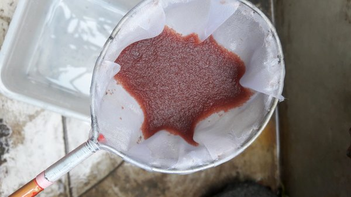

Ikan Guppy merupakan salah satu jenis ikan yang banyak diminati. Daya tarik ikan ini terletak pada ukuran nya yang kecil dan juga warna nya yang sangat mencolok. Yang pertama kita bahas adalah pakan.
Pakan ikan guppy bisa berupa pelet kecil yang bisa kamu dapatkan di toko ikan hias. Ada beberapa merk pelek yang direkomendasikan untuk ikan guppy, yaitu Pelet MEM. NRD, Otohime dsb.
Ikan guppy juga bisa diberikan pakan hidup seperti kutu air, cacing sutra, infusoria dan artemia. Khusus untuk kutu air dan cacing sutra sebelum diberikan ke ikan harus dibersihkan terlebih dahulu. Cara membersihkan nya cukup mudah yang pertama jika ;
1. Kutu air
- Cukup memindahkan kutu air yang sudah dibeli ataupun yang diambil dari alam ke dalam wadah yang sudah terisi air bersih, dengan cara mengambil kutu air tadi dengan serokan / jaring kecil dan pindahkan ke wadah tadi.
2. Cacing sutra
- Cacing sutra yang sudah dibeli ataupun yang diambildari alam dipindahkan ke dalam wadah yang sudah terisi air bersih lalu teteskan air dari kran selama 1 malam atau minimal 2 jam. Cukup hanya di tetes saja bukan di air mengalir